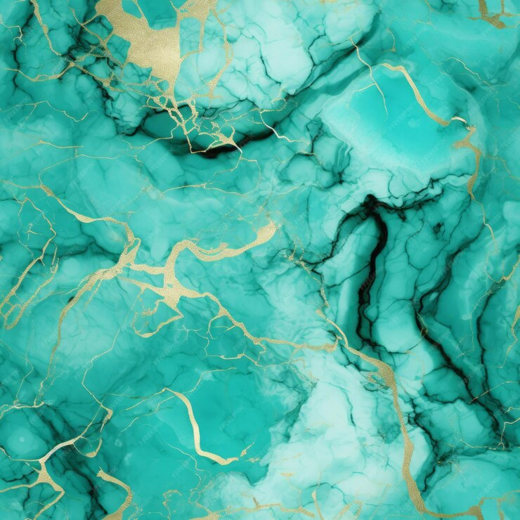

Lemon Sorbet
Ingredients:
- 1 cup sugar
- 1 cup water
- 1 cup fresh lemon juice (about 4-6 lemons)
- 1 tbsp lemon zest
- 1 tbsp vodka (optional, for smoother texture)
Instructions:
- In a saucepan, combine sugar and water. Heat over medium until the sugar dissolves completely to create a simple syrup.
- Remove from heat and stir in lemon juice, lemon zest, and vodka (if using).
- Transfer the mixture to a container and refrigerate for at least 2 hours until fully chilled.
- Pour the mixture into an ice cream maker and churn according to the manufacturer’s instructions, usually about 20 minutes.
- Transfer the sorbet to an airtight container and freeze for 2-4 hours until firm before serving.
